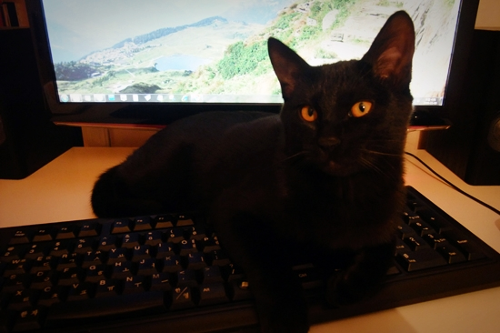

간장과 함께 살면서 조금 불편한 점은, 컴퓨터 앞에 앉아있는 꼴을 못 본다는 것. 귀염 지존 무릎냥이 되어 얌전히 단잠을 청할 때도 있지만, 대부분은 키보드를 점령한 채 마우스 포인터 낚아채기 놀이에 열중한다. 간단한 웹서핑을 할 땐 별문제 될 게 없지만, 영상을 보거나 문서 작업을 할 때 특히 결제를 하는 와중에 키보드를 점령당하면 큰일이기 때문에 대개 이 지점에서 간장과 다툼이 시작된다. 어깨너머 침대로 살포시 던져 취침을 권하는 나와 다시 모니터를 향해 냅다 달겨드는 간장 사이에 하소연과 위협, 필살 깨물기가 뒤엉키는 맞대결이 펼쳐지는 것이다
이렇게 한바탕 다투고 나면 서로 공평하게 감정이 상해야 마땅하건만, 이놈의 고양이는 이깟 소동쯤 아무렇지 않다는 듯 꼴사나운 포즈로 몸 구석구석을 할짝댄 뒤 베개 맡에 자릴 잡고 태연히 잠을 청한다. 결국, 다툼 뒤 감정의 앙금은 고스란히 인간 몫으로 남아, 멍하니 허공을 응시하며 패배를 곱씹을 수밖에 없는 것이다.